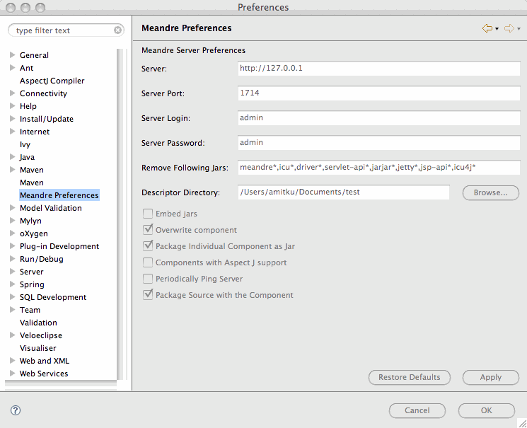

Preferences
The Meandre Component plugin can be configured by changing the preferences under Eclipse->Preferences
option. Various Server parameters that can be configured are.

Meande Server
- Meandre Server: specifies the URL including the protocol where the Meandre Infrastructure is running.
- Meandre Server port:specifies the port where this server is running.
- Meandre login: specifies the user login to be used when connecting to this server.
- Meandre Password: specifies the user password to be used when connecting to this server.
Component Packaging Options
- Embed jars: if checked, then the jar files are embeded in the component descriptor
- Overwrite component: if checked, the descriptor and jar files are overwritten on the Meandre server if it is already present in the server.
- Package Individual Component as Jar: if checked, each component will be packaged individually.
- Components with Aspect J support: if checked,
- Package Source with the Component: if checked, the source code will be included in the packaging of the jar file.
Other Options
- Remove Following Jars: specifies a list of jar files that are removed from the detected dependencies. These jar files can be removed because they are provided by the container.
- Embed jars: specifies if the jars are embedded in the component descriptor.
- Overwrite component: specifies if the component will be overwritten in the event that it's already present on the server.
- Descriptor Directory: specifies directory where the descriptors are created.